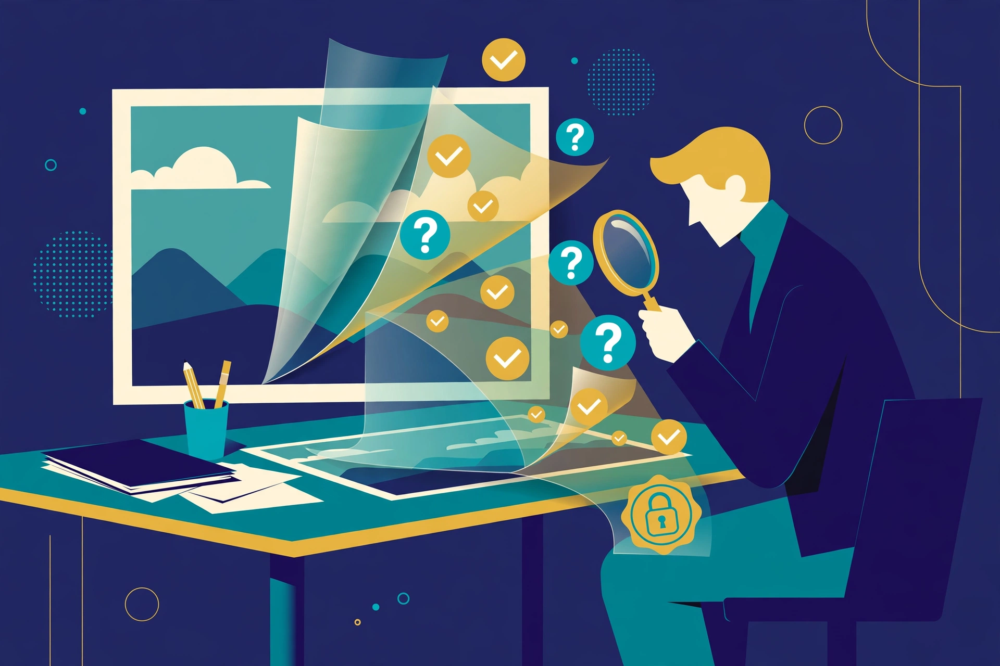
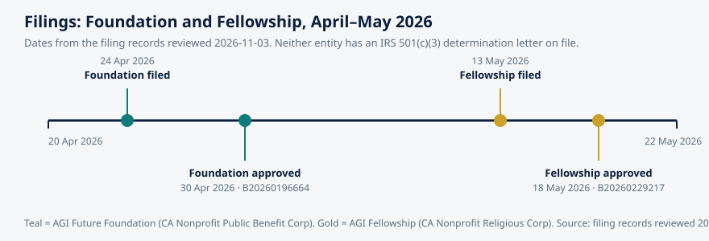

Article 63 · Intelligence & Mind · AGI Future Foundation
How to Judge a Source When Anything Can Be Faked
A photograph used to settle arguments. A video used to end them. A voice on the phone was, for most practical purposes, the person it belonged to. None of those sentences is safe any more, and the reason is not that people have become more dishonest. The reason is that the cost of manufacturing convincing evidence has collapsed. Generative tools can now produce a photorealistic image, clone a voice from a few minutes of audio, and fabricate video that looks as though it was captured on a flagship phone.
InfoGurus (W3 Series 33) — Article 1 of 3 — Long-form, staged locally for the AGI Future Foundation article program. November 2026.

Illustration: checking a source means looking past the surface of the thing itself. Generated illustration, not a photograph or a screenshot.
The question that will not go away
A photograph used to settle arguments. A video used to end them. A voice on the phone was, for most practical purposes, the person it belonged to. None of those sentences is safe any more, and the reason is not that people have become more dishonest. The reason is that the cost of manufacturing convincing evidence has collapsed. Generative tools can now produce a photorealistic image, clone a voice from a few minutes of audio, and fabricate video that looks as though it was captured on a flagship phone. The BCS interview with Adobe scientist John Collomosse puts the point plainly: digital deception has reached crisis point online, and spotting fakes by eye is a losing strategy, because a computer can detect AI use but cannot detect intent, and detection tools are locked in an arms race with the people they are meant to catch.
That is the world InfoGurus would have to work in, if the proposed Series 33 is ever defined, staffed, and built. The existing site article on InfoGurus is honest about the starting point: the April 2026 internal W3 list names "W3 LLC-InfoGurus, Series 33" and gives no further description, so the scope of the series is still to be written. This article does not fill that gap with a pretend product. It does something more useful: it assembles the best public, teachable methods that already exist for judging a source, and asks what a serious information service would have to adopt, in writing, before it earned anyone's trust.
The methods exist, and they are better than most people think. They were not invented by the AI companies. They were invented by librarians, teachers, fact checkers, and researchers who spent years watching how professionals actually separate truth from fabrication, and then turned what they saw into routines a non-expert can learn in an afternoon. The most important finding of that research is counterintuitive: the people who are best at judging sources do not read more carefully. They read less, and they check elsewhere first.
Why reading carefully is the wrong first move
Most of us were taught to evaluate a source by looking closely at it: check the author, look at the design, count the references, weigh the tone. The Stanford History Education Group (SHEG) spent years testing that instinct, and the results were unflattering. In studies comparing Stanford undergraduates, university professors, and professional fact checkers, the fact checkers were consistently faster and more accurate, and the reason was not superior knowledge. It was a different move. As the Stanford GSE report on the Civic Online Reasoning curriculum explains, fact checkers read "laterally": they leave an unfamiliar document almost immediately and open new tabs to run quick background checks on the source's reputation, organizational ties, and claims. Students and professors, by contrast, read vertically, staying inside the page and judging it on its own presentation. A polished website with hidden funding beat them again and again.
The curriculum that came out of that research, Civic Online Reasoning, was built by SHEG and released free in 2019. It teaches three questions that fact checkers ask of any digital source: who is behind it, what is the evidence for its claim, and what do other sources say? Those three questions are the spine of this article, because they survive the arrival of synthetic media better than any checklist of visual tells. A deepfake can fake a face. It cannot fake a corroborating record in three independent places, and it cannot fake a publisher with a decade of corrections behind it.
The same research produced a second lesson, about speed. A randomized study in an urban school district found that high school students who received only six 50-minute lessons in the Civic Online Reasoning curriculum were twice as likely to spot questionable websites as they had been before instruction. Six lessons. That matters, because it means information literacy is not a personality trait or a degree. It is a teachable routine, and a routine can be written down, practiced, and measured. Any information service that claims to help people judge sources should be able to say, in public, which routine it teaches, and show evidence that the routine works. The Digital Inquiry Group's Civic Online Reasoning pages now carry that curriculum forward, after SHEG became the independent nonprofit Digital Inquiry Group in 2023 and completed the transition in early 2024, according to Stanford Impact Labs.
SIFT: four moves, in order
The most widely adopted version of the fact checker's routine has a name you can remember on a bad day: SIFT. It was developed by Mike Caulfield, a digital literacy researcher at Washington State University, and it is described in detail in the open textbook Web Literacy for Student Fact-Checkers and in library guides across the United States, including the Southern New Hampshire University Library's SIFT guide. The four moves are Stop, Investigate the source, Find better coverage, and Trace claims, quotes, and media to the original context. The order matters, and the first move is the one people skip.
Stop. When you first hit a page or a post and start to read it, stop. Ask whether you know the website or the source of the information, and what the reputation of both the claim and the website is. The point of stopping is not caution for its own sake. It is that attention is the scarce resource, and the first decision is whether this source deserves any of it. A claim that arrives from an unknown account, about a subject you care about, at a moment when you are angry or afraid, is exactly the claim that most deserves a pause. Caulfield's insight, drawn from the Wineburg and McGrew research, is that the check should happen before reading, not after: sixty seconds spent finding out where a piece of media comes from, before engaging with it, changes what you notice in it.
Investigate the source. Find out what you are reading before you read it. That means leaving the site and searching for what others say about it: its owner, its funding, its track record, its Wikipedia page. This is lateral reading in practice, and it is where Wikipedia earns its keep as a tool. Not as a source to cite for the claim itself, but as a fast, sourced summary of who a publisher is, who funds it, and what controversies attach to it. The LibreTexts guide to the SIFT method makes the contrast with older checklists explicit: the older CRAAP checklist, created in the 2000s, asks you to analyze a webpage by taking what it contains at face value and in isolation. SIFT asks you to step outside the page. A site can fake its own "About" page. It cannot fake the rest of the web's opinion of it.
Find better coverage. Often you do not care about the particular article that reached you. You care about the claim it makes. So look for better coverage of the same claim from a source you already trust, or from several independent sources. If no reputable outlet has touched the story, that silence is information. If reputable outlets have covered it and reached a different conclusion, that is more information. The SNHU guide lists the fact-checking sites that have built their reputations on this work, and the habit to build is to check them before sharing, not after being corrected.
Trace claims, quotes, and media to the original context. Much of what circulates online has been stripped of context: a real photograph from a different year, a real quote from a different speech, a real statistic from a different population. Tracing means finding the original reporting source and asking who said it, where it came from, and what surrounded it when it was first published. A video clip of a few seconds is the classic case. The clip may be genuine footage, and still be misleading, because the thirty seconds before it changed the meaning of everything in it. Tracing is the move that catches that.
The five laws underneath the routine
Routines are only as good as the principles behind them, and the clearest statement of those principles comes from UNESCO. The Five Laws of Media and Information Literacy, inspired by the librarian S. R. Ranganathan's Five Laws of Library Science from 1931, are written as guides for everyone involved in media and information literacy, and they repay reading in full because they say things the checklists leave out.
Law One says that information, communication, libraries, media, technology, the internet, and other forms of information providers are for use in critical civic engagement and sustainable development, and that they are equal in stature: none is more relevant than another or should ever be treated as such. That is a direct challenge to the habit of treating one channel as authoritative by default. A video is not more trustworthy than a document because it moves. A post from an official-looking account is not more trustworthy than a library record because it arrived faster.
Law Two says every citizen is a creator of information and knowledge and has a message, and must be empowered to access new information and to express themselves. Media and information literacy is for all, women and men equally, and is a nexus of human rights. This matters for any information service, because it rules out a model in which experts hand down verdicts to a passive public. The literate citizen is a participant, not an audience.
Law Three is the one most often skipped in practice: information, knowledge, and messages are not always value neutral, or always independent of biases. Any conceptualization, use, and application of media and information literacy should make this truth transparent and understandable to all citizens. A source can be accurate and still be selective. A fact can be true and still be framed to mislead. The SIFT move of investigating the source exists precisely because of this law: you cannot judge a claim without judging the interests behind the place it came from.
Law Four says every citizen wants to know and understand new information, knowledge, and messages, and to communicate, even if she or he is not aware of it, admits it, or expresses it, and that her or his rights must never be compromised. Curiosity is the default, not the exception, and the response to misinformation cannot be to restrict people's access to information. It has to be to strengthen their ability to judge it.
Law Five says media and information literacy is not acquired at once. It is a lived and dynamic experience and process, complete only when it includes knowledge, skills, and attitudes, and covers access, evaluation, use, production, and communication of information, media, and technology content. Literacy is not a course you finish. It is a practice you maintain, because the deceptions change every year and the routine has to change with them.
Taken together, the five laws explain why the older idea of "teaching people the facts" was never enough. Facts expire. Sources change hands. New synthetic techniques appear. What endures is a citizen who knows how to check, and a public record of checks that other people can follow. That is the closest thing to a mission statement that a proposed information series could adopt without inventing anything, and it is worth noting that UNESCO wrote it for everyone, not for any one organization.
Synthetic media and the limits of detection
The synthetic media problem deserves its own section, because it breaks one of the oldest assumptions in information literacy: that seeing is a form of evidence. A review of 22 experimental studies, summarized in a 2026 briefing on surveillance footage authentication, found that human participants identified deepfake video correctly with an average accuracy of 63.3 percent, barely better than a coin flip, and worse when the footage was low resolution, which describes most of the video people actually encounter. The same briefing cites a Gartner 2025 AI risk management survey in which 62 percent of organizations said they had experienced a deepfake-related incident in the prior twelve months. Those numbers are reported second-hand here, through the IntelliSee briefing, which attributes the accuracy figure to Birrer and Just in New Media and Society (2024) and the incident figure to Gartner's survey of 302 organizations. A reader who wants to rely on them should trace them to those original sources, which is exactly the SIFT move this article recommends.
If humans cannot reliably spot synthetic media, and detection tools are in an arms race with generators, what is left? The serious answer emerging from the standards world is provenance: instead of asking "is this fake?", ask "where did this come from, and can anyone prove it?" The Coalition for Content Provenance and Authenticity, C2PA, maintains an open technical standard for exactly that. As C2PA's own site explains, the standard provides a way for publishers, creators, and consumers to establish the origin and edits of digital content, under the consumer-facing name Content Credentials, which functions like a nutrition label for digital content, showing its history to anyone, at any time.
The mechanism is a signed manifest embedded in, or attached to, a media file. The manifest records what device captured the content, what software processed it, what edits were applied, and whether any generative AI was involved, and it is cryptographically signed so that any change to the recorded facts or the underlying media is detectable. The BCS interview describes the design as three pillars fused together: secure metadata, invisible watermarking, and cryptographic fingerprinting, so that the history survives even when a platform strips ordinary metadata. The Content Authenticity Initiative, which Adobe created in 2019 and which founded and advocates for C2PA, now counts more than 6,000 members, according to that same interview.
But provenance has honest limits, and a trustworthy information service would have to state them in the same breath as the promise. First, a C2PA manifest proves the identity of the publisher and the integrity of the edit history. It does not prove that the scene depicted is factual. A real camera can record a staged event, and a signed manifest will faithfully attest to a staged event. Second, metadata can be stripped in hostile environments, and an adversary can simply publish fakes without manifests. The absence of provenance is not proof of deception, and the presence of strong provenance is positive evidence of authenticity, not a guarantee of truth. As the Petronella Technology guide to C2PA and watermarking puts it, the absence of a manifest should not be treated as definitive evidence of a fake, while the presence of a valid manifest is strong evidence of authenticity. Third, provenance only works if publishers adopt it and if audiences learn to look for it, which is a literacy problem all over again.
That is why provenance and literacy belong together, and why neither replaces the other. Provenance gives a literate reader something solid to check.
The fact-checking ecosystem, and how to use it
No individual can verify everything. The working answer, for most people most of the time, is to lean on institutions whose job is verification, and to know how those institutions work well enough to judge them. The News Literacy Project, a nonpartisan national education nonprofit founded in 2008 by journalist Alan C. Miller, is one of the most useful starting points. Its Checkology virtual classroom, introduced in 2016, offers interactive lessons hosted by journalists and subject-matter experts, and its RumorGuard platform identifies and debunks examples of viral misinformation, going beyond the simple debunk to teach the debunking skill itself. The News Literacy Project's own account of its RumorGuard classroom resource describes students choosing a rumor, summarizing its main points, reading a related fact-check from a third-party source, and reflecting on the verification process journalists used. That sequence, pick a rumor, read the check, reflect on the method, is SIFT in classroom form, and research cited by the Project suggests the approach, sometimes called prebunking, can help people build resilience against misinformation.
The wider ecosystem includes the fact-checking sites named in the SIFT teaching materials, and the habit that matters is not which one you prefer but that you consult one before you share. A claim that has been checked is a claim with a public record attached to it: who checked it, what evidence they found, and what they concluded. A claim that has never been checked, circulating only in screenshots and reposts, is a claim with no record at all, and the honest response is to say so, out loud, before passing it on.
What a serious information service would have to do
This is the point where the article turns from the general to the particular, and where the honesty rules of this program matter most. InfoGurus, as proposed, has no written scope, no staff, no product, and no users. The site article says so, and this article will not pretend otherwise. But the methods above imply a set of commitments that any future definition of the series would have to make, and they are worth writing down now, so that a future reviewer can check whether they were kept.
First, the series would need to choose one lane. The site article names the candidates: a reference service, an expert network, a research function for the network, or a public information service. Teaching people to judge sources is closest to the public information service and the reference service, and it is a lane with a real public need and real public methods behind it. But it is still a choice, and it would need a human decision, minuted, by a named Steward Council, before any build.
Second, it would need a written standard for accuracy and sourcing, published where readers can see it: every substantive claim carries its source and its date; every correction is published visibly in a corrections log; and no claim is presented as consensus when it rests on a single source. The standard in this article program, inline links to sources actually fetched plus a references section, is a small version of that discipline, and it exists because a reader should be able to check every load-bearing claim without taking the author's word.
Third, it would need a boundary around advice. General information about how to judge a source is one thing. Legal, medical, and financial advice are another, requiring licensed humans, disclaimers that are actually read, and escalation to a qualified person rather than an answer from a model. The site article names this boundary as one of the three standards the series would have to meet, alongside accuracy and provenance, and it is the boundary most likely to be tested first, because people ask information services exactly the questions that carry the most risk.
Fourth, it would need to measure itself in trust and correction, not volume. The site article's planned sequence, written scope first, then a small testable service with sources and dates on every claim and a published corrections log, then review by the people it serves, and only then any discussion of scale, is the right order. A service that grows before it has published its first correction has not yet learned the habit that makes information work trustworthy.
None of that exists today for InfoGurus. Saying so is not a criticism of the people who named the series. It is the condition for taking the series seriously later.
A daily practice, in fifteen minutes
Methods only matter if they survive contact with a real day. Here is a practice built from the routines above, designed to fit into fifteen minutes and to be repeated until it becomes a habit rather than a homework assignment.
Start with the feed, not with the claim. Once a day, pick the single most surprising thing you saw, the one that made you angry, delighted, or certain. Surprise is the emotion misinformation rides on, and the most surprising item is the one most worth checking. Do not pick five. Pick one, and check it properly.
Run SIFT on it, in order, with a timer. Stop and ask whether you know the source. Spend two minutes investigating the source laterally: search its name, read what others say about it, check whether it has a Wikipedia page and what that page says about its funding and history. Spend five minutes finding better coverage: search the claim itself and see whether a source you trust has covered it, and whether the coverage agrees. Spend five minutes tracing: find the original context of the quote, the photograph, or the video, and check the date it was first published. If at any point the trail goes cold, that is your answer for today: not proven, not shared.
Then do the one thing most checkers skip: write down what you found, in a sentence or two, with the link. A corrections habit that lives only in your head will not survive the week. A note with a link is a record, and a record is what turns a private judgment into something another person can check. That is the smallest version of the corrections log a public service would keep, and practicing it privately is how you learn whether you would trust a service that kept one publicly.
Finally, notice what the practice does to your reading over time. The Stanford research suggests the effect is fast: six short lessons doubled students' ability to spot questionable websites. The mechanism is not that students memorized a list of bad sites. It is that they learned to pause, to leave the page, and to ask who is behind it.
Timeline: how judging sources became a teachable skill
| Year | Development | Source |
|---|---|---|
| 1931 | Librarian S. R. Ranganathan proposes the Five Laws of Library Science, later the inspiration for UNESCO's Five Laws of Media and Information Literacy. | UNESCO, Five Laws of MIL |
| 2008 | Journalist Alan C. Miller founds the News Literacy Project, a nonpartisan education nonprofit. | News Literacy Project (Wikipedia) |
| 2016 | The News Literacy Project introduces Checkology, its virtual classroom; fact checkers' lateral reading is documented in the Stanford research literature. | News Literacy Project (Wikipedia) |
| 2019 | The Stanford History Education Group releases the Civic Online Reasoning curriculum free to the public; Mike Caulfield's SIFT method circulates in its textbook form. | Stanford GSE; LibreTexts, SIFT |
| 2019 | Adobe creates the Content Authenticity Initiative, which later founds and advocates for the C2PA standard. | BCS, Beyond deepfakes |
| 2023–2024 | The Stanford History Education Group becomes the independent nonprofit Digital Inquiry Group; the transition completes in early 2024 and the curricula remain free. | Stanford Impact Labs |
| 2026 | The Foundation's filing timeline (see chart): Foundation filed 2026-04-24, approved 2026-04-30; Fellowship filed 2026-05-13, approved 2026-05-18. InfoGurus remains proposed, not formed. | Foundation and Fellowship filing records reviewed 2026-11-03 |

Chart: the two verified filings behind this article program. Dates are from the filing records reviewed 2026-11-03. Neither entity has an IRS 501(c)(3) determination letter on file.
Glossary
- Lateral reading: Leaving an unfamiliar source almost immediately to check what trusted sources elsewhere say about it, rather than judging the source by its own presentation. The core move of professional fact checkers, documented by the Stanford History Education Group.
- Vertical reading: Staying inside a single source and judging it by its design, tone, and internal references. The habit lateral reading replaces.
- SIFT: Four moves for checking a source, developed by Mike Caulfield: Stop, Investigate the source, Find better coverage, Trace claims, quotes, and media to the original context.
- Click restraint: Resisting the urge to click the first search result, and instead scanning results for clues about credibility before choosing where to click. Taught in the Civic Online Reasoning curriculum.
- Provenance: The recorded history of a piece of content: where it came from, what was done to it, and by whom. C2PA Content Credentials are a provenance standard.
- Content Credentials: The consumer-facing name for C2PA provenance: a signed, tamper-evident record of a file's origin and edit history, described by C2PA as a nutrition label for digital content.
- Prebunking: Teaching people to recognize misinformation tactics in advance, so they are resilient when they meet a new example, rather than only correcting falsehoods after they spread.
- Astroturfing: Masking the true sponsor of a message by making it appear widespread and organic in origin. Named in the MLA's lateral reading lesson as a reason sources hide their bias.
Frequently asked questions
Is this article saying InfoGurus exists?
No. InfoGurus (W3 Series 33) is proposed and planned, not formed, funded, or offered. It has no written scope, no product, no users, and no partners. This article describes public methods for judging sources and the commitments a future definition of the series would have to make.
Can I learn to spot deepfakes by looking closely?
Not reliably. Research summarized in the IntelliSee briefing found average human accuracy of 63.3 percent across 22 experimental studies, barely better than chance. The reliable moves are checking the source laterally, finding better coverage, tracing the original context, and looking for signed provenance such as C2PA Content Credentials.
Does a C2PA label mean a photo or video is true?
No. It means the publisher's identity and the edit history are attested and tamper-evident. It does not prove the scene depicted is factual, and the absence of a label does not prove something is fake.
Is Wikipedia a reliable source?
It depends on the use. For SIFT's "investigate the source" move, Wikipedia is useful as a fast, sourced summary of who a publisher is and who funds it. For the claim itself, Wikipedia's own policy requires verifiability: material must be attributable to reliable, published sources. Cite the underlying source, not the encyclopedia.
Where should I start if I only have fifteen minutes?
Learn SIFT and practice it on one surprising item a day. The Stanford research found six 50-minute lessons doubled students' ability to spot questionable websites. The routine, not a list of bad sites, is what transfers.
How does this article support the Foundation?
It supports Foundation donations and funding by demonstrating, in public, the standard the Foundation would hold a future information series to: sourced claims, visible corrections, and a clear line between information and advice. It does not solicit donations, and no donation is described as tax-deductible.
Sources
- Stanford Graduate School of Education, "It doesn't take long to learn how to spot misinformation online, Stanford study finds" — https://ed.stanford.edu/news/it-doesn-t-take-long-learn-how-spot-misinformation-online-stanford-study-finds?print=all
- Stanford Impact Labs, "How Can Solutions-Focused Researchers Scale Their Work Beyond the University?" — https://impact.stanford.edu/article/how-can-solutions-focused-researchers-scale-their-work-beyond-university
- Digital Inquiry Group, Civic Online Reasoning module for high school — https://cor.inquirygroup.org/blog/module-for-high-school/
- MLA Style Center, "Introducing Lateral Reading before Research" — https://style.mla.org/lateral-reading/
- Mike Caulfield, "SIFT (The Four Moves)," via LibreTexts, Introduction to College Research — https://human.libretexts.org/Bookshelves/Research_and_Information_Literacy/Introduction_to_College_Research_(Butler_Sargent_and_Smith)/04%3A_Fact-Checking/4.02%3A_The_SIFT_Method
- LibreTexts, "Evaluating with SIFT" — https://socialsci.libretexts.org/Bookshelves/Library_and_Information_Science/Library_1600%3A_Introduction_to_College-Level_Research/04%3A_Evaluating_Information/4.02%3A_Evaluating_with_SIFT
- Southern New Hampshire University Library, "What is SIFT?" — https://libanswers.snhu.edu/faq/398592
- UNESCO, "Five Laws of Media and Information Literacy" — https://www.unesco.org/en/media-information-literacy/five-laws
- Coalition for Content Provenance and Authenticity (C2PA) — https://c2pa.org/ (fetched via Firecrawl, 2026-11-07)
- BCS, "Beyond deepfakes: why content provenance is the new infrastructure for digital trust" (John Collomosse interview) — https://www.bcs.org/articles-opinion-and-research/beyond-deepfakes-why-content-provenance-is-the-new-infrastructure-for-digital-trust/
- Petronella Technology, "Brand Trust in a Deepfake World: C2PA and Watermarks" — https://petronellatech.com/blog/brand-trust-in-a-deepfake-world-c2pa-and-watermarks/
- IntelliSee, "Surveillance Footage Authentication: 2026 Briefing" (Birrer and Just 2024; Gartner 2025 survey, as reported there) — https://intellisee.com/intelligence/surveillance-footage-authentication-deepfake-evidentiary-c2pa-nist-fre-707-2026-standards-compliance/
- News Literacy Project, "New resource from News Literacy Project turns viral misinformation into classroom lesson" — https://newslit.org/news-and-research/new-resource-from-news-literacy-project-turns-viral-misinformation-into-classroom-lesson/
- "News Literacy Project" (Wikipedia) — https://en.wikipedia.org/wiki/News_Literacy_Project
- AGI Future Foundation, Article 03, "InfoGurus: Knowledge Organisation, Expertise, and Answers You Can Check" (local site file,
articles/article-03-infogurus.html) — the existing site article this piece builds on without duplicating. - Foundation and Fellowship filing records, reviewed 2026-11-03 (Foundation Entity No. B20260196664; Fellowship Entity No. B20260229217).
Goals served: foundation-funding (demonstrates the sourcing standard a future information series would be held to), foundation-governance (accuracy, provenance, and advice-boundary standards in writing). Not a solicitation; nothing here offers securities or describes a donation as tax-deductible.
Series page: InfoGurus (S33). Related articles: Who Gets to Be an Expert? (Article 64) · The Knowledge Graph as a Public Good (Article 65)
Contact
Questions about InfoGurus, or about the Foundation's work in this category, go to x@agifuturefoundation.org. Say who you are, what your interest is, and what you could contribute. A reply, if one comes, will come from a human. This page is not an offer of securities and not a solicitation of funds: no price, terms, or return is promised, and no funding is being sought for this series. Nothing on this page is legal, tax, or financial advice.